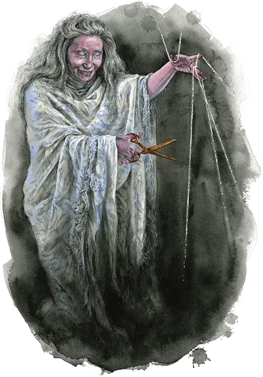

Карга судьбы
Fate Hag
Средняя Фея, нейтральная

Класс Доспеха 14 (природный доспех)
Хиты 71 (13к8 + 13)
Скорость 30 футов
| мод | спас | ||
|---|---|---|---|
| СИЛ | 12 | +1 | +1 |
| ЛОВ | 14 | +2 | +2 |
| ТЕЛ | 13 | +1 | +3 |
| мод | спас | ||
|---|---|---|---|
| ИНТ | 12 | +1 | +1 |
| МДР | 18 | +4 | +6 |
| ХАР | 15 | +2 | +2 |
Навыки Восприятие +6, История +5, Магия +5, Обман +6
Иммунитет к состояниям очарование
Чувства истинное зрение 60 футов, пассивное Восприятие 16
Языки Все
Опасность 4 (1100 опыта)
Бонус мастерства +2
Особенности
Легендарное сопротивление (2/день). Если карга проваливает спасбросок, он может вместо этого сделать спасбросок успешным.
Отслеживание нитей (1/день). Карга может наложить заклинание знание легенд [legend lore], без использования материальных компонентов и используя Мудрость в качестве базовой характеристики.
Действия
Мультиатака. Карга совершает две атаки Ножницам. Она может заменить одну из атак Использованием заклинаний.
Ножницы. . Рукопашная атака оружием: +6 к попаданию, досягаемость 5 футов, одна цель. Попадание: 8 (1к8 + 4) урона силовым полем. Если целью является существо, оно с помехой совершает броски атаки до конца следующего хода карги.
Использование заклинаний. Держа в руках серый посох, карга накладывает одно из следующих заклинаний, без затрат материальных компонентов используя Мудрость в качестве базовой характеристики (Сл спасброска от заклинаний 14):
• Неограниченно: благословение [bless], указание [guidance], безмолвный образ [silent image];
• 1/день каждое: порча [bane], проклятие [bestow curse], предсказание [divination], наблюдение [scrying] (действием).
Легендарные действия
Карга может совершить 3 легендарных действия, выбирая из указанных ниже вариантов. Лишь одно легендарное действие может быть совершено за раз, и только в конце хода другого существа. Карга восстанавливает истраченные действия в начале своего хода.
Предначертанная прогулка. Карга волшебным образом телепортируется вместе с любым снаряжением, которое она несёт или носит с собой, в незанятое пространство, которое она может видеть в пределах 30 футов.
Запутывание нитей. Карга волшебным образом обматывает существо, которое может видеть в пределах 60 футов, призрачными серебряными нитями. Существо должно преуспеть в спасброске Силы Сл 14, иначе его скорость уменьшается до 0 до конца его следующего хода.
Проклятие судьбы (стоит 2 действия). Карга магическим образом проклинает существо, которое она может видеть в пределах 60 футов. Существо должно совершить спасбросок Мудрости Сл 14, и существо с преимуществом совершает данный бросок, если оно наносило урон карге в течение последней минуты. При провале существо с помехой совершает проверки характеристик, броски атаки и спасброски до тех пор, пока не закончится действие проклятия. Один раз в ход, когда проклятое существо проваливает один из этих бросков к20, оно получает 7 (2к6) урона силовым полем. Проклятие заканчивается спустя 1 минуту, когда существо преуспеет в трёх, в общей сложности, проверках характеристик, бросках атаки или спасбросках в любой комбинации или когда карга использует это действие снова.
Описание
Карга судьбы — это слуги судьбы, обитающие в основном в Стране Фей и Царстве Теней или вблизи переходов в эти планы с Материального плана. Аспекты судьбы, к которым карга судьбы наиболее восприимчива, зависят от плана, на котором она обитает — полная надежд и процветающая Страна Фей или мрачная и обреченная в Царстве Теней.
Карги судьбы носят с собой сверкающие волшебные ножницы, которыми они перерезают нити судьбы. Эти ножницы - страшное оружие, разрубающее судьбу врага так же, как и его плоть. Карги судьбы часто заглядывают в чужие судьбы, открывая истины, когда они накладывают проклятия и когда они предлагают предсказания; они наслаждаются такими проблесками и вынуждены говорить о том, что они видят. Те, кто осмеливается причинить вред карге судьбы, обнаруживают, что серебристые нити судьбы обвиваются вокруг их тел, затягиваясь и врезаясь все глубже, когда судьба оборачивается против врагов карги.